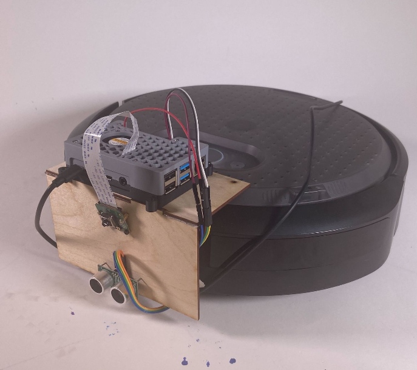
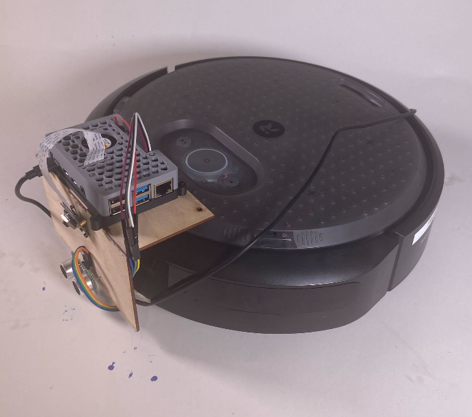
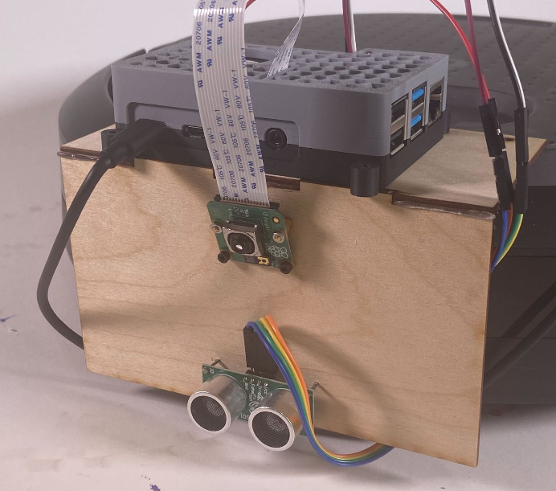
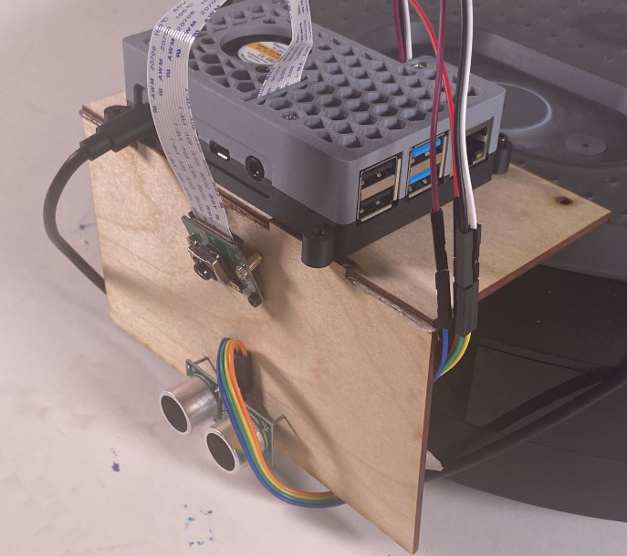
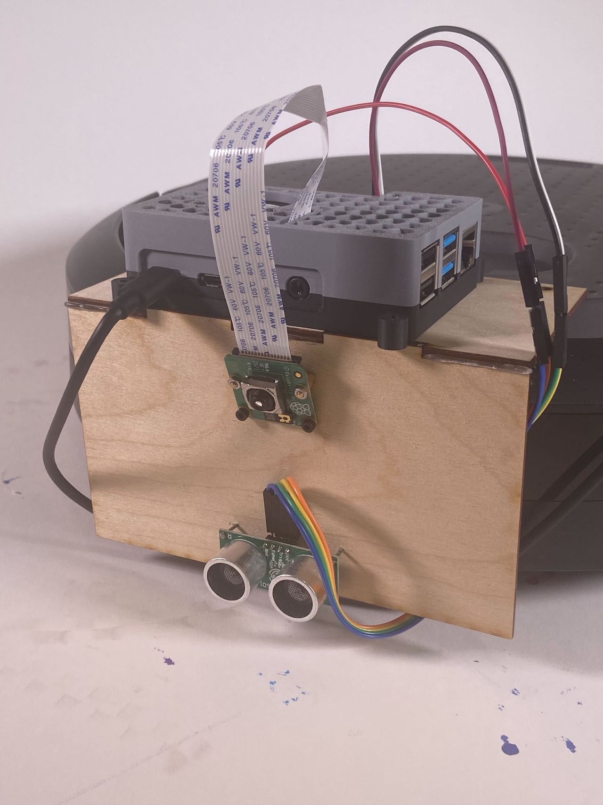

Homework6: Mushroom Kingdom Raceway




Goal:
Move a Create3 robot through a maze of objects using a RaspberryPi camera trained on Google's Teachable Machine to determine how to navigate through the maze.
Code: https://github.com/egold01/ME35_Create3_TeachableMachine_V2
Solution:
I worked with Josh Balbi and Luca Byrnes to complete this challenge.
Code concepts:
- The robot moves forward until it recognizes that it is 6in away from an object
- It then uses the model from Google's Teachable Machine and images from the Pi's camera to identify the object in front of it
- After identifying the object, it reads from an AirTable that tells it which way to turn (left or right 90deg) based on the object it is seeing. The AirTable is the only location where the turning direction of the robot for each object is specified so we could change this very easily (we didn't know what the maze looked like until right before we traversed it)
- The robot then turns in the specified direction and continues on its merry way...
Difficulties with the code:
- The Create3 that we had for the project tended to drift, especially when continuously stopping and starting after driving short distances. We therefore implemented a small tweak to the robot's movement to correct for the drift
Hardware and sensor placement:
- We chose to place the Pi at a slightly elevated height at a slight angle in order to be able to see the object at the required 6 in distance (some of the objects were pretty small)
- We placed the ultrasonic sensor as close to the ground as we could because of how small some of the objects were

Here's a sped up video of the robot navigating the maze. You'll see us moving the objects around in the video because of the drift issue that I explained above: